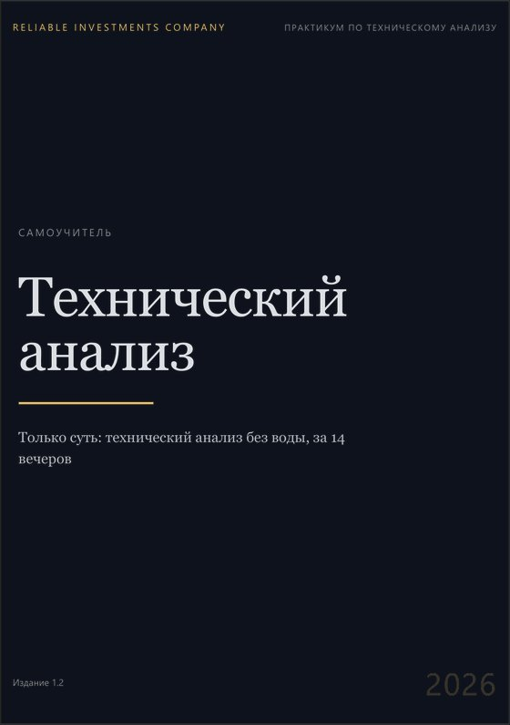

Технический анализ.
Только суть.
Бесплатный самоучитель от практикующего трейдера. Без воды и обещаний быстрых денег. Нажмите кнопку, и PDF сразу скачается.
Бесплатно · без регистрации
Внутри
- Тренды, уровни поддержки и сопротивления
- Свечные модели и графические фигуры
- Индикаторы и как их не переусложнять
- Управление риском и размер позиции
- Как выбрать брокера
Статьи
Простыми словами о риске, просадке и о том, как устроены деньги в трейдинге.
Копитрейдинг: что это такое и как работает копирование сделок
Копитрейдинг — это когда сделки опытного трейдера автоматически повторяются на вашем счёте. Он открывает сделку, и та же сделка в тот же момент…
Читать →
Копитрейдинг: отзывы, обман и как проверить трейдера до подключения
Набираешь «копитрейдинг отзывы» — и получаешь две крайности: восторги «удвоил депозит за месяц» и крики «развод, всё слили». Правда обычно скучнее.…
Читать →
Сколько можно заработать на копитрейдинге: честный расчёт и риски
«Сколько можно заработать на копитрейдинге?» — вопрос, на который в интернете отвечают либо «100% в месяц», либо «нисколько, это развод». Обе…
Читать →
Копитрейдинг золота (XAUUSD): как это устроено и почему золото
Золото — один из самых популярных инструментов на рынке Forex, и одновременно один из самых сложных для самостоятельной торговли. Оно двигается…
Читать →
ПАММ-счёт, копитрейдинг или доверительное управление: что выбрать
Если вы хотите, чтобы на рынке за вас торговал профессионал, вариантов обычно три: ПАММ-счёт, доверительное управление и копитрейдинг (у российских…
Читать →
Сигналы по золоту или копитрейдинг: что подходит именно вам
Сигналы и копитрейдинг часто сравнивают, как будто нужно выбрать что-то одно. На деле это два хороших инструмента для разных людей и разных задач.…
Читать →
Торговый робот для золота: советник в терминале или копитрейдинг — в чём разница
Торговый робот — программа, которая сама открывает и закрывает сделки по заданному алгоритму. На Forex их чаще называют советниками (Expert Advisor,…
Читать →
Что такое просадка и что она значит для ваших денег — простыми словами
Слово «просадка» управляющие любят, потому что оно звучит технически и не пугает. Инвестору оно мешает: непонятно, что именно происходит с деньгами.…
Читать →
Комиссия только с прибыли: почему это редкость и как это проверить
Самый недооценённый пункт в разговоре об управлении деньгами — это не доходность, а то, как управляющий получает своё. От этой детали зависит, кто на…
Читать →
Фиксированный риск на сделку: почему это важнее процента прибыли
Когда выбирают торговую систему, почти всегда смотрят на доходность: «сколько процентов в месяц». Это самая заметная цифра и самая бесполезная для…
Читать →
Как читать просадку торгового счёта и когда это норма
Просадка — это расстояние от максимума счёта до текущего значения. Она есть у любой торговой системы, которая торгует, и сама по себе не означает,…
Читать →
Начните с вопроса
Напишите нам в Telegram или WhatsApp: подскажем брокера под вашу страну и модель риска под вас, подключим 14-дневное демо и поможем начать.
Написать в Telegram